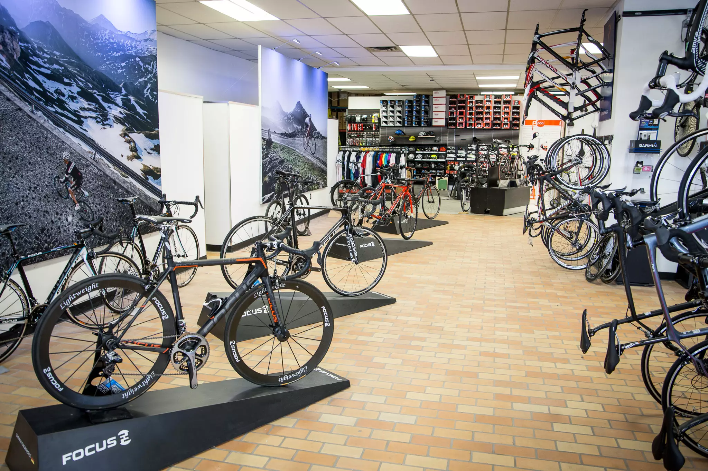
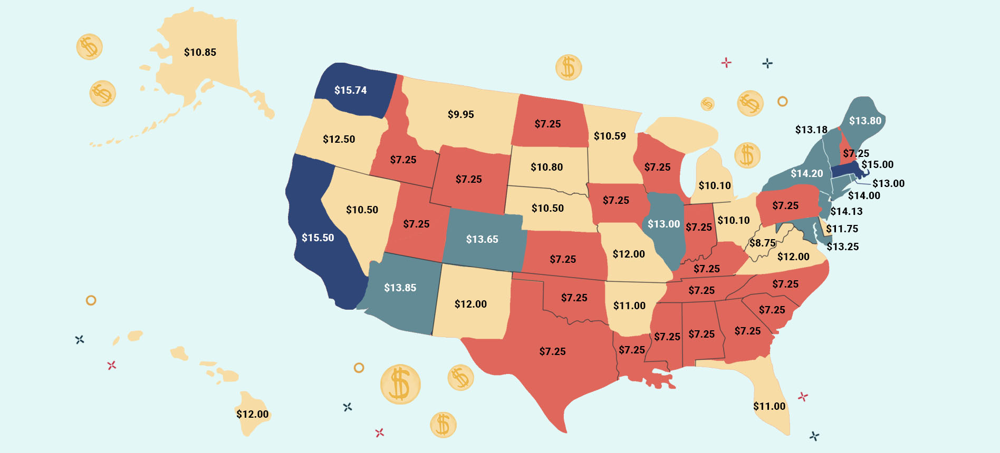
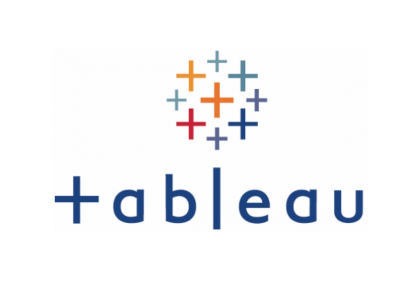

The project involved a detailed data cleaning process on a bike sales dataset using Microsoft Excel.Techniques such as removing duplicate records, trimming spaces, converting text fields to numeric values, and eliminating unwanted characters were used to ensure the data was accurate and suitable for analysis. Advanced Excel features were used to develop a pivot table and a dashboard,

In this project, our goal was to analyze the variables that impact the gross revenue generated by movies. We examined different factors that might influence revenue, such as production budget, genre, cast, release date, and marketing budget. By identifying these variables, we aimed to provide insights into the key drivers of revenue in the movie industry.
In this project, our objective was to gather data from Amazon's website through web scraping methods, specifically focusing on price data for various products. By collecting this data, we sought to analyze pricing trends and identify factors that may impact product pricing. This analysis could provide valuable insights into how prices are set in the marketplace and inform business strategies for pricing products competitively.

This project aimed to explore global COVID-19 data through the use of SQL Server. Various SQL techniques were employed, such as Joins, CTEs, Temporary Tables, Window Functions, Aggregate Functions, Creating Views, and Converting Data Types, to effectively extract and manipulate the required data for analysis. By leveraging these techniques, valuable insights were gained into COVID-19 trends across different countries and regions, including cases like deaths, recoveries, and vaccination rates.

The aim of this project is to analyze minimum wage data by state in the United States. The project involves gathering and analyzing information on minimum wage rates across different states, as well as performing data cleaning using Python libraries to ensure accuracy and consistency in the analysis. Additionally, visualizations were created to examine the correlation or covariance between minimum wage rates and other relevant factors. The visualizations provide an intuitive understanding of how different variables impact minimum wage policies in the United States.

Tableau dashboards were created for various projects, including Global CO2 emissions, World happiness, Airbnb project, and Video game sales. These dashboards allow for interactive data exploration and visualization, making it easier to identify patterns, trends, and insights.